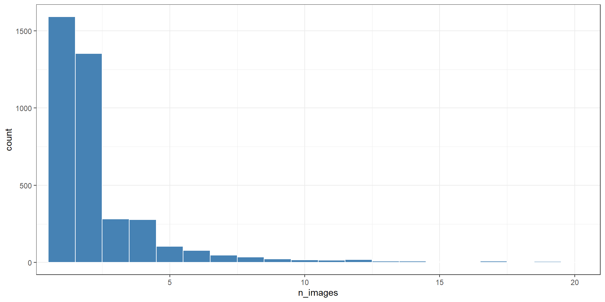
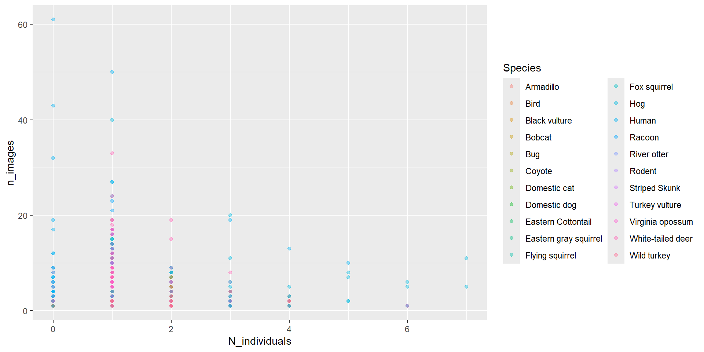
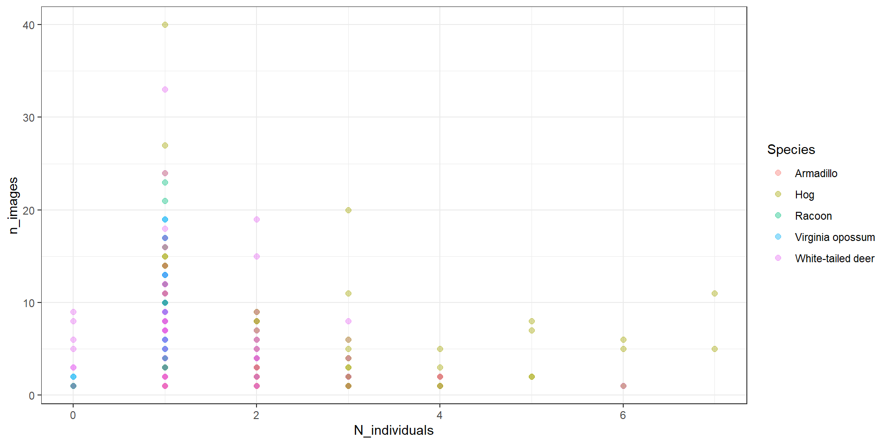
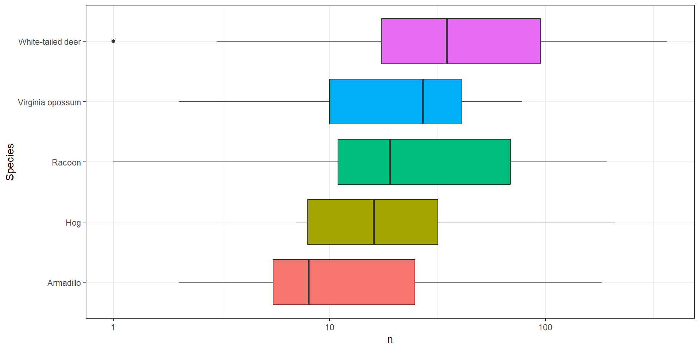

library(tidyverse)
recordTable <- read_csv(
"data/recordTable.csv"
)Visualization, Debugging, and Data Manipulation
Session 3
Gabriel Andrade
Visualization, Debugging, and Data Manipulation
Session 3
Today we will connect three skills:
visualize data
↓
recognize and solve problems
↓
manipulate data with dplyrToday is mostly practice
We will not cover every detail from Modules 5, 6, and 7.
The website contains the full explanations.
Today we will focus on the most important tools you need to keep working with your own data.
Load the data
Open your intro-r-course project.
Create a script called:
session-03.Rinside the scripts/ folder.
Then run:
Always inspect first
Before plotting or manipulating data:
Ask:
- What does one row represent?
- What are the variables?
- Which columns are numeric?
- Which columns are categorical?
The logic of ggplot2
Most plots follow the same structure:

In R:
There are many more options depending on what you want to explore or communicate with your data. If you want to go further, I recommend visiting these two websites: R Charts & R Graph Gallery | 
Bar plots
Question:
How many records do we have for each species?
Make it readable
Histograms
Zooming without changing the data
ggplot(
data = recordTable,
aes(x = n_images)
) +
geom_histogram(
binwidth = 1,
fill = "steelblue",
color = "white"
) +
coord_cartesian(
xlim = c(1, 20)
) +
theme_bw()coord_cartesian() changes what we display, not the original data.

Mapping vs. setting
Setting:
Every point has the same color.
Mapping:
Color represents a variable.
Common aesthetics
We can map or set:
color
fill
shape
size
alphaExample:
ggplot(
recordTable,
aes(
x = N_individuals,
y = n_images,
color = Species
)
) +
geom_point(alpha = 0.4)
Focus on a few species
Sometimes a plot is easier to read if we focus on fewer groups.
Scatterplots
Question:
Are records with more individuals associated with more images?
ggplot(
data = common_records,
aes(
x = N_individuals,
y = n_images,
color = Species
)
) +
geom_point(
alpha = 0.4,
size = 2
) +
theme_bw()
From raw records to summaries
Sometimes we need to summarize before plotting.
For example:
sp_counts <- recordTable |>
count(
Station,
Species
) |>
filter(
Species %in% common_species
)
sp_counts# A tibble: 62 × 3
Station Species n
<chr> <chr> <int>
1 Control 0 White-tailed deer 1
2 Control 1 Armadillo 6
3 Control 1 Hog 7
4 Control 1 Racoon 12
5 Control 1 Virginia opossum 2
6 Control 1 White-tailed deer 29
7 Control 2 Armadillo 182
8 Control 2 Hog 210
9 Control 2 Racoon 99
10 Control 2 Virginia opossum 73
# ℹ 52 more rowsNow each row represents:
one station × one speciesBoxplots
ggplot(
data = sp_counts,
aes(
x = Species,
y = n,
fill = Species
)
) +
geom_boxplot(
show.legend = FALSE
) +
scale_y_log10() +
coord_flip() +
theme_bw()
Here, the data are still counts.
Only the axis is displayed on a log scale.
Combining geometries
#| eval: true
ggplot(
data = sp_counts,
aes(
x = Species,
y = n,
fill = Species
)
) +
geom_violin(alpha = 0.5) +
geom_boxplot(width = 0.15) +
geom_jitter(width = 0.15, alpha = 0.6) +
scale_y_log10() +
coord_flip() +
theme_bw()Each + adds a new layer.

Which plot should I use?
| Variables | Possible plot |
|---|---|
| one categorical | bar plot |
| one numeric | histogram |
| two numeric | scatterplot |
| categorical + numeric | boxplot or violin plot |
Start with the question:
What do I want to show?
Saving plots
Data manipulation
Now we move from:
plotting raw data
to:
preparing data for questions
We will use dplyr.
Many dplyr functions are verbs.
Important dplyr verbs
| Function | Action |
|---|---|
select() |
choose columns |
filter() |
choose rows |
arrange() |
sort rows |
rename() |
rename columns |
mutate() |
create columns |
count() |
count observations |
group_by() |
create groups |
summarise() |
calculate summaries |
Select columns
select() works with columns.
selected_records <- recordTable |>
select(
Station,
Species,
N_individuals,
Age,
n_images
)
selected_records# A tibble: 3,898 × 5
Station Species N_individuals Age n_images
<chr> <chr> <dbl> <chr> <dbl>
1 Control 0 White-tailed deer 0 Unknown 1
2 Control 1 Armadillo 1 Adult 2
3 Control 1 Armadillo 2 Unknown 2
4 Control 1 Armadillo 1 Unknown 1
5 Control 1 Armadillo 1 Unknown 1
6 Control 1 Armadillo 1 Adult 2
7 Control 1 Armadillo 1 Adult 1
8 Control 1 Bug 1 Adult 1
9 Control 1 Bug 1 Adult 2
10 Control 1 Bug 1 Adult 1
# ℹ 3,888 more rowsFilter rows
# A tibble: 1,266 × 25
RootFolder File RelativePath Station Camera DateTime Species
<chr> <chr> <chr> <chr> <chr> <dttm> <chr>
1 Field Station … DSCF… "Control 0\… Contro… Contr… 2025-05-15 14:53:20 White-…
2 Field Station … DSCF… "Control 1\… Contro… Contr… 2025-06-04 21:02:19 White-…
3 Field Station … DSCF… "Control 1\… Contro… Contr… 2025-06-09 23:34:22 White-…
4 Field Station … DSCF… "Control 1\… Contro… Contr… 2025-06-10 00:34:24 White-…
5 Field Station … DSCF… "Control 1\… Contro… Contr… 2025-06-16 09:39:38 White-…
6 Field Station … DSCF… "Control 1\… Contro… Contr… 2025-06-16 10:39:40 White-…
7 Field Station … DSCF… "Control 1\… Contro… Contr… 2025-06-18 08:46:21 White-…
8 Field Station … DSCF… "Control 1\… Contro… Contr… 2025-06-18 09:46:22 White-…
9 Field Station … DSCF… "Control 1\… Contro… Contr… 2025-06-20 06:56:25 White-…
10 Field Station … DSCF… "Control 1\… Contro… Contr… 2025-06-20 07:56:26 White-…
# ℹ 1,256 more rows
# ℹ 18 more variables: N_individuals <dbl>, Sex <chr>, Age <chr>,
# Identifier <chr>, Comments <chr>, Favorite <lgl>, DateTime_original <dttm>,
# year <dbl>, date_shift <dbl>, n_images <dbl>, Date <date>, Time <time>,
# delta.time.secs <dbl>, delta.time.mins <dbl>, delta.time.hours <dbl>,
# delta.time.days <dbl>, DateTime2 <dttm>, Date2 <date>filter() works with rows.
Multiple conditions
# A tibble: 86 × 25
RootFolder File RelativePath Station Camera DateTime Species
<chr> <chr> <chr> <chr> <chr> <dttm> <chr>
1 Field Station … DSCF… "Control 1\… Contro… Contr… 2025-06-20 06:56:25 White-…
2 Field Station … DSCF… "Control 1\… Contro… Contr… 2025-06-20 07:56:26 White-…
3 Field Station … DSCF… "Control 1\… Contro… Contr… 2025-06-28 12:48:34 White-…
4 Field Station … DSCF… "Control 2\… Contro… Contr… 2025-04-24 15:32:46 White-…
5 Field Station … DSCF… "Control 2\… Contro… Contr… 2025-04-24 16:55:22 White-…
6 Field Station … DSCF… "Control 2\… Contro… Contr… 2025-05-05 14:58:46 White-…
7 Field Station … DSCF… "Control 2\… Contro… contr… 2025-06-06 20:44:02 White-…
8 Field Station … DSCF… "Control 2\… Contro… contr… 2025-06-06 21:44:04 White-…
9 Field Station … DSCF… "Control 2\… Contro… contr… 2025-06-07 02:31:38 White-…
10 Field Station … DSCF… "Control 2\… Contro… contr… 2025-06-07 16:02:24 White-…
# ℹ 76 more rows
# ℹ 18 more variables: N_individuals <dbl>, Sex <chr>, Age <chr>,
# Identifier <chr>, Comments <chr>, Favorite <lgl>, DateTime_original <dttm>,
# year <dbl>, date_shift <dbl>, n_images <dbl>, Date <date>, Time <time>,
# delta.time.secs <dbl>, delta.time.mins <dbl>, delta.time.hours <dbl>,
# delta.time.days <dbl>, DateTime2 <dttm>, Date2 <date>Both conditions must be true.
This is like using:
AND
Several categories
# A tibble: 2,342 × 25
RootFolder File RelativePath Station Camera DateTime Species
<chr> <chr> <chr> <chr> <chr> <dttm> <chr>
1 Field Station … DSCF… "Control 0\… Contro… Contr… 2025-05-15 14:53:20 White-…
2 Field Station … DSCF… "Control 1\… Contro… Contr… 2025-06-05 04:25:19 Armadi…
3 Field Station … DSCF… "Control 1\… Contro… Contr… 2025-06-26 07:39:44 Armadi…
4 Field Station … DSCF… "Control 1\… Contro… Contr… 2025-06-26 08:07:20 Armadi…
5 Field Station … DSCF… "Control 1\… Contro… Contr… 2025-06-26 08:39:46 Armadi…
6 Field Station … DSCF… "Control 1\… Contro… Contr… 2025-07-20 01:11:11 Armadi…
7 Field Station … DSCF… "Control 1\… Contro… Contr… 2025-07-20 02:11:12 Armadi…
8 Field Station … DSCF… "Control 1\… Contro… Contr… 2025-06-07 23:35:55 Racoon
9 Field Station … DSCF… "Control 1\… Contro… Contr… 2025-07-05 06:20:42 Racoon
10 Field Station … DSCF… "Control 1\… Contro… Contr… 2025-07-09 20:38:20 Racoon
# ℹ 2,332 more rows
# ℹ 18 more variables: N_individuals <dbl>, Sex <chr>, Age <chr>,
# Identifier <chr>, Comments <chr>, Favorite <lgl>, DateTime_original <dttm>,
# year <dbl>, date_shift <dbl>, n_images <dbl>, Date <date>, Time <time>,
# delta.time.secs <dbl>, delta.time.mins <dbl>, delta.time.hours <dbl>,
# delta.time.days <dbl>, DateTime2 <dttm>, Date2 <date>%in% asks:
Is this value inside this group of possible values?
Rename columns
record_data <- recordTable |>
rename(
station = Station,
species = Species,
individuals = N_individuals,
age = Age,
images = n_images,
date = Date,
time = Time
)
record_data# A tibble: 3,898 × 25
RootFolder File RelativePath station Camera DateTime species
<chr> <chr> <chr> <chr> <chr> <dttm> <chr>
1 Field Station … DSCF… "Control 0\… Contro… Contr… 2025-05-15 14:53:20 White-…
2 Field Station … DSCF… "Control 1\… Contro… Contr… 2025-06-05 04:25:19 Armadi…
3 Field Station … DSCF… "Control 1\… Contro… Contr… 2025-06-26 07:39:44 Armadi…
4 Field Station … DSCF… "Control 1\… Contro… Contr… 2025-06-26 08:07:20 Armadi…
5 Field Station … DSCF… "Control 1\… Contro… Contr… 2025-06-26 08:39:46 Armadi…
6 Field Station … DSCF… "Control 1\… Contro… Contr… 2025-07-20 01:11:11 Armadi…
7 Field Station … DSCF… "Control 1\… Contro… Contr… 2025-07-20 02:11:12 Armadi…
8 Field Station … DSCF… "Control 1\… Contro… Contr… 2025-06-09 13:26:30 Bug
9 Field Station … DSCF… "Control 1\… Contro… Contr… 2025-07-06 13:27:56 Bug
10 Field Station … DSCF… "Control 1\… Contro… Contr… 2025-07-06 14:24:44 Bug
# ℹ 3,888 more rows
# ℹ 18 more variables: individuals <dbl>, Sex <chr>, age <chr>,
# Identifier <chr>, Comments <chr>, Favorite <lgl>, DateTime_original <dttm>,
# year <dbl>, date_shift <dbl>, images <dbl>, date <date>, time <time>,
# delta.time.secs <dbl>, delta.time.mins <dbl>, delta.time.hours <dbl>,
# delta.time.days <dbl>, DateTime2 <dttm>, Date2 <date>Now the column names are easier to type.
Create new columns
# A tibble: 3,898 × 26
RootFolder File RelativePath station Camera DateTime species
<chr> <chr> <chr> <chr> <chr> <dttm> <chr>
1 Field Station … DSCF… "Control 0\… Contro… Contr… 2025-05-15 14:53:20 White-…
2 Field Station … DSCF… "Control 1\… Contro… Contr… 2025-06-05 04:25:19 Armadi…
3 Field Station … DSCF… "Control 1\… Contro… Contr… 2025-06-26 07:39:44 Armadi…
4 Field Station … DSCF… "Control 1\… Contro… Contr… 2025-06-26 08:07:20 Armadi…
5 Field Station … DSCF… "Control 1\… Contro… Contr… 2025-06-26 08:39:46 Armadi…
6 Field Station … DSCF… "Control 1\… Contro… Contr… 2025-07-20 01:11:11 Armadi…
7 Field Station … DSCF… "Control 1\… Contro… Contr… 2025-07-20 02:11:12 Armadi…
8 Field Station … DSCF… "Control 1\… Contro… Contr… 2025-06-09 13:26:30 Bug
9 Field Station … DSCF… "Control 1\… Contro… Contr… 2025-07-06 13:27:56 Bug
10 Field Station … DSCF… "Control 1\… Contro… Contr… 2025-07-06 14:24:44 Bug
# ℹ 3,888 more rows
# ℹ 19 more variables: individuals <dbl>, Sex <chr>, age <chr>,
# Identifier <chr>, Comments <chr>, Favorite <lgl>, DateTime_original <dttm>,
# year <dbl>, date_shift <dbl>, images <dbl>, date <date>, time <time>,
# delta.time.secs <dbl>, delta.time.mins <dbl>, delta.time.hours <dbl>,
# delta.time.days <dbl>, DateTime2 <dttm>, Date2 <date>,
# multiple_individuals <lgl>The new column is logical:
TRUE / FALSECount records
# A tibble: 22 × 2
species n
<chr> <int>
1 White-tailed deer 1266
2 Armadillo 554
3 Racoon 522
4 Hog 454
5 Virginia opossum 295
6 Eastern gray squirrel 244
7 Bug 99
8 Human 80
9 Bird 78
10 Coyote 75
# ℹ 12 more rowsThe result has one row per species.
The column n contains the number of records.
Count combinations
# A tibble: 154 × 3
station species n
<chr> <chr> <int>
1 Control 0 White-tailed deer 1
2 Control 1 Armadillo 6
3 Control 1 Bug 30
4 Control 1 Coyote 1
5 Control 1 Eastern Cottontail 5
6 Control 1 Hog 7
7 Control 1 Human 1
8 Control 1 Racoon 12
9 Control 1 Virginia opossum 2
10 Control 1 White-tailed deer 29
# ℹ 144 more rowsNow each row represents:
one station × one speciesThis is a different unit than the original data.
Group and summarize
species_summary <- record_data |>
group_by(species) |>
summarise(
records = n(),
stations = n_distinct(station),
total_individuals = sum(
individuals,
na.rm = TRUE
),
.groups = "drop"
)
species_summary # A tibble: 22 × 4
species records stations total_individuals
<chr> <int> <int> <dbl>
1 Armadillo 554 15 576
2 Bird 78 9 83
3 Black vulture 3 1 4
4 Bobcat 22 6 22
5 Bug 99 8 113
6 Coyote 75 11 79
7 Domestic cat 2 1 2
8 Domestic dog 5 2 6
9 Eastern Cottontail 61 8 60
10 Eastern gray squirrel 244 9 252
# ℹ 12 more rowsNow each row represents one species.
Always ask
What does one row represent?Before summarizing:
1 row = 1 camera-trap recordAfter summarizing by species:
1 row = 1 speciesAfter summarizing by station:
1 row = 1 stationPipes
The pipe:
passes the result of one step into the next step.
Read it as:
thenExample:

A complete pipeline
common_species <- c(
"White-tailed deer",
"Armadillo",
"Racoon",
"Hog",
"Virginia opossum"
)
common_summary <- recordTable |>
filter(
Species %in% common_species
) |>
group_by(Species) |>
summarise(
records = n(),
stations = n_distinct(Station),
.groups = "drop"
) |>
arrange(
desc(records)
)
common_summary # A tibble: 5 × 3
Species records stations
<chr> <int> <int>
1 White-tailed deer 1266 16
2 Armadillo 554 15
3 Racoon 522 11
4 Hog 454 11
5 Virginia opossum 295 9Summaries can become plots
ggplot(
common_summary,
aes(
x = Species,
y = records,
fill = Species
)
) +
geom_col(
show.legend = FALSE
) +
coord_flip() +
theme_bw()
Use geom_col() when the counts already exist in the data.
Session workflow
import data
↓
inspect
↓
visualize
↓
debug when needed
↓
select / filter
↓
group / summarize
↓
visualize summaries
↓
export resultsDebugging is part of R
You will see:
- messages,
- warnings,
- errors.
That is normal.
The goal is not to avoid every error.
The goal is to learn how to understand and fix them.
Messages, warnings, errors
Message
R is telling you something.
Warning
R completed the operation, but something may need attention.
Error
R stopped because something went wrong.
Read the error
Example:
R may say:
Error: object 'grafics' not foundStart with the message.
What is R telling you?
Common things to check
- Did I spell the object correctly?
- Did I run the line that creates the object?
- Is the object in the Environment?
- Did I load the package?
- Are parentheses and commas correct?
- Is the file path correct?
Inspect the object
When code fails, check the object.
Do not only inspect the code.
Inspect the data being used by the code.
Search for the error
Most errors have happened to someone else before.
Useful search:
R ggplot2 object not foundLess useful search:
object not foundInclude:
R
package name
function name
important part of the error
Ask better questions
Not very useful:
My code does not work.Much more useful:
I am trying to make a bar plot of Species.
This is my code:
ggplot(recordTable, aes(x = Species))
geom_bar()
This is the error:
Error: unexpected symbol
What should I check?Using AI tools
AI tools can help you:
- interpret errors,
- explain code,
- suggest things to check,
- identify syntax problems,
- explain arguments.
But use them as a learning tool.
Not as something that does your thinking for you.
AI can be wrong
Always:
- Read the suggested code.
- Run it yourself.
- Inspect the result.
- Ask whether the result makes sense.
- Check documentation when needed.

Important
Do not copy and run code that you do not understand.
Practice at home
Before the next session:
- Finish the Module 5 practice.
- Read Module 6 and try the debugging exercises.
- Complete the Module 7 practice.
- Focus especially on:
filter()
select()
count()
group_by()
summarise()